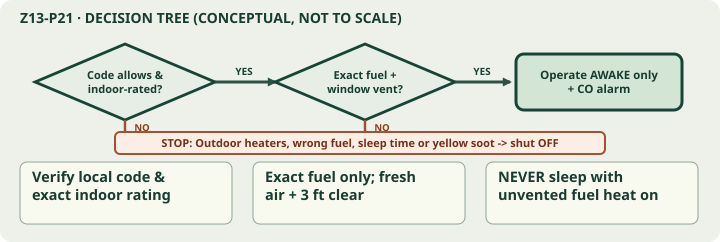

Z13-P21 · Home survival and utilities · New manuscript
Respect manufacturer limits and local codes for indoor-rated fuel heaters
Prevent indoor CO, oxygen depletion, and fuel-vapor fires if a household owns a manufacturer-certified indoor-safe supplemental heater.
When it applies · Jurisdictions where portable indoor-rated catalytic propane or kerosene heaters are legally permitted (check local/apartment codes first—many ban them outright).
Equipment · Manufacturer manual for the exact heater model, factory oxygen-depletion sensor (ODS), UL/CSA listing, working CO alarms, and proper fuel grade.

Actions
- Verify FIRST that local fire codes and rental/condo rules legally allow unvented fuel heaters—never assume an outdoor garage/construction torpedo heater or camp heater is indoor-rated.[U03, C05]
- Operate a strictly indoor-rated heater ONLY per its exact manufacturer manual: maintain required open fresh-air ventilation (cracked window per manual), keep 3-foot combustible clearance, use ONLY the exact specified fuel (e.g., 1-K clear kerosene; NEVER gasoline), and never bypass safety tip-over or ODS sensors.[U03, C05]
- NEVER sleep with an unvented fuel-burning heater running, ALWAYS refuel outdoors after full cooldown, and keep working battery CO alarms active in the room and hallway.[U03, U12, C15]
Failure recognition · Running an outdoor construction propane heater inside a closed basement or accidentally filling a kerosene heater with gasoline.[U03, C05]
Verify · Confirm legal code compliance, exact indoor-rated model manual followed, fresh-air vent open, CO alarms active, and unit shut off before sleep.[U03, U12]
Stop or change course · Sooty yellow flames, chemical odor, headache/drowsiness, or CO alarm requires turning the heater OFF immediately, exiting to fresh air, and calling 911 if symptomatic.[C07, U03]
Evidence and editorial notes
- C05 · CPSC · Portable Heaters and Camping Equipment (current web edition)
- Section: Carbon monoxide poisoning from portable camping equipment · Conditions: Tents, campers, vehicles and other enclosed spaces
Support: Fuel-burning camping equipment can lead to fatal carbon monoxide buildup in enclosed spaces.
Limitations: High altitude increases incomplete combustion and CO production. · Conflicting evidence: None; aligns with CDC-CO and NPS guidance.
Editorial note: Hard-stop prohibition against indoor/vestibule/tent combustion. · Specialist reviewer: Carbon monoxide safety and emergency medicine
Primary source · checked 2026-11-24 - C07 · CPSC · Carbon Monoxide Fact Sheet (current web edition)
- Section: CO poisoning symptoms; what to do if suspected · Conditions: Suspected carbon monoxide exposure
Support: Escape to fresh air immediately and contact emergency services. Symptoms can include headache, dizziness, nausea and confusion.
Limitations: CO is colorless and odorless; symptoms mimic viral illness or altitude fatigue and can incapacitate sleepers without waking. · Conflicting evidence: None; aligns with CDC-CO.
Editorial note: Standard CO emergency stop condition across Z02 and Z03. · Specialist reviewer: Carbon monoxide safety and emergency medicine
Primary source · checked 2026-11-24 - C15 · NPS · Wildland Fire Safety (current web edition)
- Section: Wildland Fire Safety > Campfires and Stoves · Conditions: Outdoor cooking with portable liquid or canister stoves
Support: Operate stoves on level cleared ground away from tents and dry fuels, cool completely before refueling, and move away from any spilled fuel before lighting.
Limitations: Fuel canisters behave differently in cold weather and high elevation; follow manufacturer limits. · Conflicting evidence: None; aligns with CPSC-C and USFS-FIRE.
Editorial note: Governs stove setup, refueling isolation, and spill failure recognition. · Specialist reviewer: Portable appliance safety and fire prevention
Primary source · checked 2026-11-24 - U03 · NFPA · Heating Fire Safety (current web edition)
- Section: Heating Equipment Safety > Space Heaters, Fireplaces, and Clearances · Conditions: Residential winter heating and supplemental backup heating
Support: Maintain at least a 3-foot clearance between anything flammable and any heating source (space heaters, fireplaces, wood stoves), inspect chimneys annually, use only the fuel specified by the heater manufacturer, and never use kitchen ovens to heat homes.
Limitations: Unvented fuel-burning heaters also create severe carbon monoxide and indoor air hazards; local building codes govern installations. · Conflicting evidence: None; aligns with CPSC-C and READY-HOME-F.
Editorial note: Grounds safe supplemental heating clearances and stop boundaries in Z13. · Specialist reviewer: Fire safety and licensed HVAC trades
Primary source · checked 2026-11-24 - U12 · CPSC · CO Alarms (current web edition)
- Section: Home Alarms > Smoke, Carbon Monoxide, and Battery Backup Readiness · Conditions: Occupied residences with fuel-burning furnaces, water heaters, attached garages, or outage generators
Support: Maintain interconnected or battery-backed CO and smoke alarms on every floor and outside sleeping rooms, replace expired sensors on schedule, and keep exterior furnace/dryer/exhaust vents clear of drifting snow.
Limitations: Blocked high-efficiency PVC furnace intake/exhaust pipes in heavy snow can force CO back indoors or lock out heating systems. · Conflicting evidence: None; integrates with C09 and Z13-R03.
Editorial note: Connects winter snow-drift vent inspection to household CO prevention. · Specialist reviewer: Carbon monoxide safety and residential HVAC
Primary source · checked 2026-11-24
Source lineage · CPSC Portable Heaters and NFPA Heating Safety; new manuscript · Classification · New manuscript.